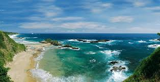

| COSTUMBRES |
||
| INFORMACIÓN Fiestas de Noviembre Durante el penúltimo mes del año se llevan a cabo en Puerto Escondido las celebraciones turísticas más importantes de la localidad: las Fiestas de Noviembre. Los festejos inician con la elección de la " Señorita Puerto Escondido", quien en adelante presidirá todas las actividades, y luego se lleva a cabo una verbena popular en el Andador Turístico Pérez Gasga. En el marco de las festividades, en Puerto Escondido tiene lugar el Torneo Internacional de Surfing y el de Pesca Deportiva del Pez Vela , motocross , además de variadas muestras gastronómicas y eventos culturales y deportivos como torneos de básquetbol, fútbol, voleibol de cancha y playero. Otro de los eventos principales que se lleva a cabo es el Festival Costeño de la Danza, donde se exponen las manifestaciones dancísticas, musicales y culturales típicas de la región costeña, representadas por grupos folklóricos autóctonos. Este evento se ha convertido en una tradición en donde las mismas comunidades reclaman su derecho a participar. La Danza de la Tortuga, Los Diablos, Los Tejorones, El Berelele y el Toro de Petate, entre otros, son algunas de las piezas que representan alrededor de 450 danzantes entre mixtecos, chatinos y afro mestizos. |
||
| Carnaval de Puerto Escondido El Carnaval de Puerto Escondido es una fiesta multicolor, de luz y de alegría, que manifiesta con toda liberalidad el buen estado de ánimo de los oaxaqueños y que se contagia a nuestros visitantes La fiesta inicia con la llamada "Quema del mal humor", que simboliza la desaparición de todos los sentimientos negativos para dar paso a la alegría desbordante y el buen humor. Luego se lleva a cabo la coronación de las principales figuras de la celebración: los Reyes Infantiles, el Rey de la Alegría y la Reina del Carnaval. Le siguen tres desfiles, los cuales se realizan a lo largo de un trayecto que se inicia en "El Cafecito" de la Playa Zicatela, continúa por el Morro Santa Fe, la Carretera Costera y el Adoquinado, y sube luego por la Avenida Oaxaca hasta llegar al Mercado de Puerto Escondido, bajando entonces a la Explanada Municipal. SURF. |
El surf, es claramente uno de los máximos pretextos para visitar este lugar, que además cuenta con gran gastronomía y un sin fin de actividades, que debes tomar en cuenta cuando agendes tu siguiente escapada. 
|
|